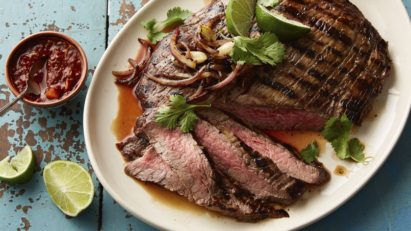

Carne Asada
La carne asada es mi comida favorita, es un platillo típico mexicano que se hace mucho en monterrey, muy popular en reuniones familiares y con amigos. Se caracteriza por su preparación a la parrilla y su sabor ahumado único. Suele acompañarse con tortillas, guacamole, cebolla asada y salsas picantes.
